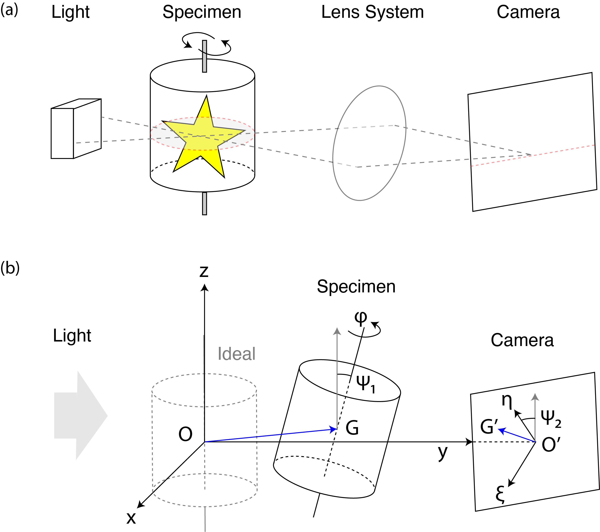
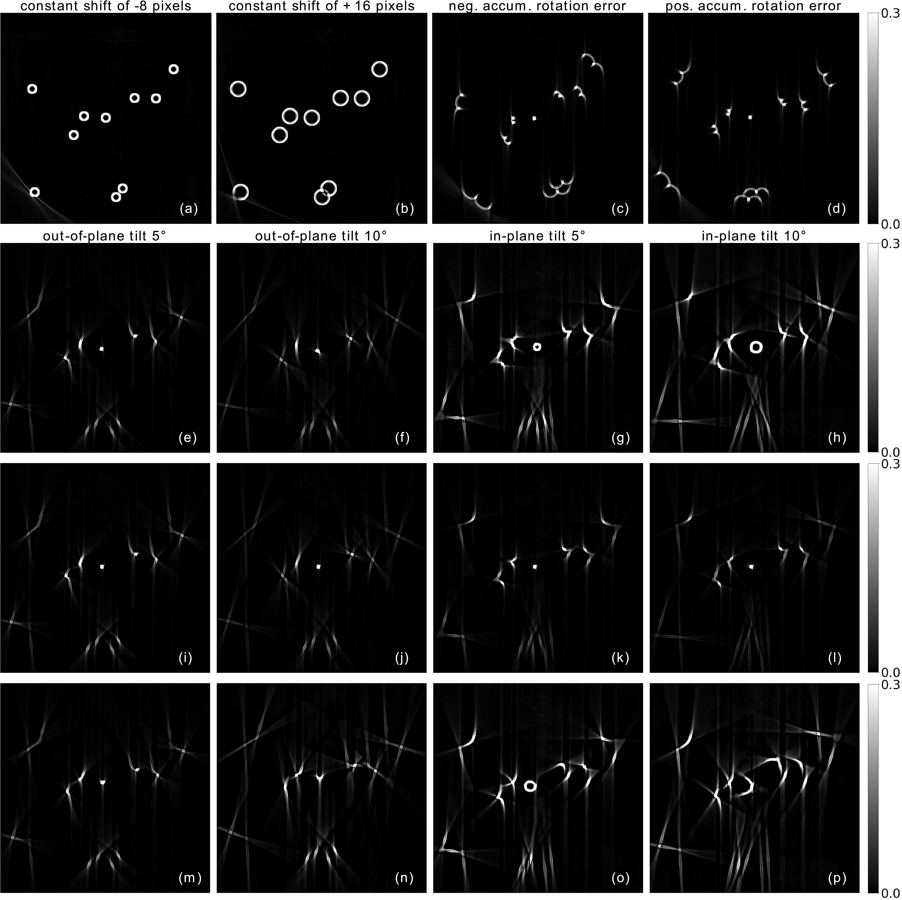

Characterization of Mechanical Artifacts¶
In this section, we first describe the imaging geometry of OPT using a set of system parameters (angles and shifts). We point out typical places where the most critical mechanical errors occur. Then, we present a catalog of artifacts along with a detailed description of the three most common types of mechanical errors.
Common OPT Geometry and Reconstruction Algorithms¶
The general OPT geometry is illustrated in Fig. 10 (a). A 3D sample is placed in a rotating cylinder and imaged on a camera. This camera records 2D projections of either the absorption of the sample (transmission OPT) [106] or its emitted fluorescence (emission OPT) [91, 107]. These tomographic projections, not considering more intricate models of light propagation, are enabled in reason of the very low numerical aperture of the OPT imaging system, in sharp contrast with conventional optical microscopy. The sample is rotated around the axis of the cylinder for tomographic reconstruction.
We place the sample in a 3D coordinate system (\(O-xyz\)) (Fig. 10 (b)). In an ideal setup [22], the center of the cylinder is at \(O\) and the rotation axis would perfectly match \(z\)-axis. In our refined model, the center of the sample cylinder is at \(G\) and its orientation is described by the three angles \(\boldsymbol{\theta}=(\boldsymbol{\varphi},\psi_1,\psi_2)\) for a rigid-body rotation. The \(P\)-dimensional vector \(\boldsymbol{\varphi} = (\varphi_1, \ldots, \varphi_P)\) represents the set of \(P\) rotation angles around the rotation axis, one for each captured projection. The tilted rotation axis is described by the remaining two angles \(\psi_1\) and \(\psi_2\) which are scalars that represent out-of-plane and in-plane tilt, respectively. The detector plane is described by a 2D coordinate system (\(O'-\xi\eta\)) that is perpendicular to the optical axis.


Fig. 10 (a) Diagram of OPT (ideal setup). Light that passes through or is emitted by the sample gets imaged on a CCD camera using a lens system. In this ideal configuration, a slice of the sample perpendicular to the rotation axis corresponds to information in the temporal sequence recorded by a row of pixels on the CCD camera. (b) OPT imaging system with mechanical errors. The lens system is omitted here for simplicity. The light dashed cylinder indicates the ideal position of the specimen. The solid cylinder represents the tilted sample (translated to \(G\)) that rotates around its orientation axis. The detector plane is described by a 2D coordinate system (\(O'-\xi\eta\)) perpendicular to the optical axis (\(y\) axis). The projection of \(O\) and \(G\) in the detector plane are \(O'\) and \(G'\), respectively. The angle \(\psi_1\) represents the out-of-plane tilt angle between the orientation axis of the sample and \(z\)-axis direction (gray vertical arrow). The rotation angle \(\psi_2\) represents the in-plane tilt angle of the detector plane around the optical axis.¶
Many reconstruction algorithms are available for OPT, from filtered backprojection (FBP) [108, 109] to optimization-based methods [110, 111]. They mainly come from the field of CT, a canonical tomography application using X-rays with a similar parallel-beam geometry [112]. In the simplistic model where the rotation axis is assumed to be aligned with \(z\)-axis and when the in-plane tilt vanishes, one horizontal plane of the sample corresponds to one line of the pixels on the camera. Many reconstruction algorithms thus operate on camera images line by line, reconstructing the object plane by plane. A mismatch between the geometry of the setup and that assumed by the reconstruction algorithm obviously impacts the quality of the final reconstruction. This induces artifacts that have been reported previously in the literature, along with dedicated procedures to correct them (see Previously Reported Artifacts and Correction Techniques).
Catalog of Mechanical Artifacts¶
The geometry of OPT is described by the cylinder center \(G(x_G, y_G, z_G)\) and the angles \(\theta = (\boldsymbol{\varphi}, \psi_1, \psi_2)\). To characterize different mechanical imperfections, we introduce a catalog of imaging artifacts that stem from a mismatch between the true value and the value assumed at reconstruction for each parameter of our refined model. This catalog is useful for experimentalists to identify artifacts and correct them either experimentally (re-calibration) or computationally. We summarize in Table 3 the results with references to previous works when relevant, accompanied by visualizations shown in Fig. 11 based on numerical simulations using point-like beads, a popular tool to characterize OPT systems.
Error |
Visual Clues |
Dependence on FOV |
Dependence on \(z\) axis |
References |
|---|---|---|---|---|
Translation \(x\) axis |
Circle, Double edge |
No |
No |
|
Translation \(y\) axis |
Out-of-focus blur |
No |
No |
|
Translation \(z\) axis |
None |
No |
No |
N/A |
Tilt of rotation axis: Out-of-plane \(\psi_1\) |
Various |
Yes |
Yes |
N/A |
Tilt of rotation axis: In-plane \(\psi_2\) |
Various |
Yes |
Yes |
|
Rotation angle: Accumulative |
Seagull |
Yes |
No |
N/A |
The numerical simulation is done using Tomosipo, a convenient and versatile tomographic toolbox for 3D simulations and reconstructions of any geometric setup [23]. We use a ground-truth object of 10 scattered beads of size \(6^3\) pixels in the FOV with their centers on the same plane perpendicular to \(z\) axis. This object is placed in a cube of size \(512^3\) pixels. The number of rotation angles is 1200 over the range of 0 to 360 degrees to generate a set of 2D projections. The location of this plane was moved along \(z\) axis to observe the dependence of a certain type of mechanical artifacts on \(z\) location. We added different types of errors to the forward model to simulate a realistic imperfect OPT system. Then, we used standard FBP algorithm for reconstruction with any correction.

Fig. 11 Artifacts in the reconstruction of simulated beads under controlled geometric errors. (a)-(b) Circle artifacts due to a constant shift of -4 pixels (a) and 8 pixels (b) of the rotation center in \(x\) axis direction. (c)-(d) Seagull artifacts due to a negative (c) and positive (d) random accumulative error with maximum amplitude 0.03 degrees in the rotation angles. (e)-(p) Various artifacts due to the tilted rotation axis. (e)-(h) Reconstruction at slice 192 (64 slices below the central slice). (i)-(l) Reconstruction at slice 256 (central slice). (m)-(p) Reconstruction at slice 384 (128 slices above the central slice). The intensities of images are normalized and saturated for better visualization.¶
Shifts along \(x\)-axis (orthogonal to the axis of rotation and light propagation) result in circle artifacts. The size of artifacts is uniform across the FOV; however, their severity, as is indicated by the radius of the circle, depends on the absolute value of the shift. The larger it is, the bigger the circles will be (Fig. 11 (a) - (b)). This characterization can be applied to any object, by considering it as a sum of point-like elements. For continuous samples, their borders will appear as double edges as reported in previous OPT experiments [58]. Shifts along the \(y\)-axis (direction of light propagation) cause an out-of-focus blur when parts of the sample move out of the depth-of-field of the imaging system. Shifts along the \(z\) axis (rotation axis) cause an overall shift of the reconstruction in the \(z\) direction, but do not generate artifacts as long as the object is still within the field of view of the camera. Random vibrations may also blur the final reconstruction. They can be included in our framework as a projection-dependent translation error. This is different from the offset of the rotation axis that corresponds to a systematic error shared across all projections.
The tilt angles \(\psi_1\) and \(\psi_2\) generate artifacts of different shapes, especially when the mismatch is large. To study the impact of tilt of the rotation axis in different directions and levels of severity, as well as its dependence on the vertical location along \(z\) axis, we moved \(z\) location of the beads to three different transverse slices: slice 256 (central slice), slice 192 (64 slices below the central slice), and slice 384 (128 slices above the central slice). We added errors in the two tilt directions described previously with two values: 5 and 10 degrees. The result is shown in Fig. 11 (e) - (p).
The first two columns of images of the second to the fourth rows in Fig. 11 show that an out-of-plane tilt results in various artifacts that appear more severe close to the boundary of the image. The next two columns of images of the second to the fourth rows in Fig. 11 show that in-plane tilt in general leads to more severe artifacts of various shapes compared to out-of-plane tilt. The dependence of the size of the artifacts on the location along the vertical direction is also stronger than that of out-of-plane tilt. The central slice shows the least artifacts (third row of Fig. 11), while slices far away from it show bigger artifacts (second and last row of Fig. 11). As the tilt angle increases, the artifacts become stronger if we compare first two columns or last two columns of the tilt images in Fig. 11. We observe circle artifacts in Fig. 11 (g), (h) and (o), which indicate that when the tilt angle is small, it can be approximated by a shifted rotation center problem. When the tile angle is relatively large, such an approximation does not hold anymore, as seen in Fig. 11 (p).
The last parameter describing our refined OPT geometry is the set of rotation angles \(\boldsymbol\varphi\). On the one hand, since each rotation angle is different for each camera image, a random mismatch on this angle does not induce artifacts but introduces noise that degrades the image quality. On the other hand, a miscalibration of the rotation motor may introduce a positive or negative drift in the rotation angle, which accumulates over time. We simulated this kind of model mismatch and observed seagull-shaped artifacts in the reconstruction (Fig. 11 (c) and (d)). Depending on the sign of the random accumulative error, the seagull-shaped artifact appears to orient either towards or away from the image center. The size of the seagull in each transverse slice depends on the distance of the bead relative to the boundary of the object. The closer to the boundary, the bigger the seagulls will be while the bead located at the exact center of the slice appears unaffected since it coincides with the rotation axis (Fig. 11 (c) and (d)).